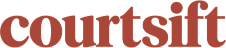

Selected work

Search every NBA player game with filters for opponents, teammates in or out, starters, and defense rank. Compare players side by side and research player prop lines.
Developing a Python/SQL pipeline that ingests NBA reporting from X and official injury reports, converts availability updates into timestamped events, and links them to Kalshi markets.
Analyzed 18,519 injury-report PDFs and 41.4 million market trades; validated 88 announcement-linked events to study market response to player news.
Building a fast news feed and experimental market-reaction predictions, with fantasy-waiver insights planned.
Ultimately, the goal is to have a live X NBA injury reporting data pipeline with an accompanying model to predict changes in Kalshi betting lines
Python, SQL · Oct. 2026 – PresentBuilt an end-to-end NBA shot make-probability model using enterprise-level data provided via the Oklahoma City Thunder.
Engineered 58 shot-geometry, defensive-pressure, and player-profile features across 425K+ shots.
Developed and validated CatBoost, logistic regression, GAM, and LightGBM models, ultimately achieving 0.620 season-holdout log loss with a 5-seed LightGBM ensemble, a 10% improvement over the naive baseline.
Python (LightGBM, CatBoost, polars, pandas, NumPy, scikit-learn) · Sep. 2026Background
B.S. · Class of 2028
GPA: 3.8 / 4.0
Work & research experience
UCLA Mobility Lab
BruinML
UCLA Math Circle
UCLA Discovering Math Summer Institute
Algoverse
NASA Robotics Systems Technology – ER4
Robotics For The Spectrum